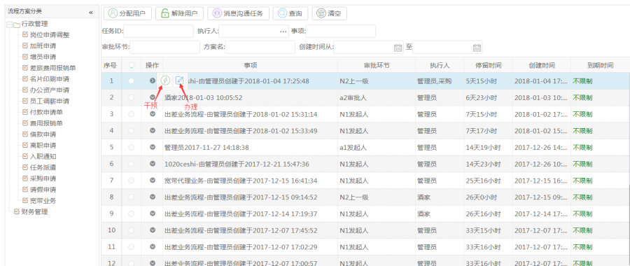
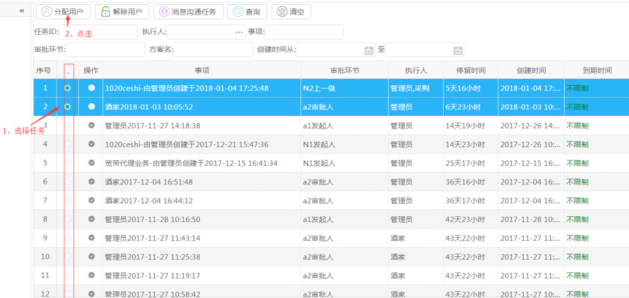
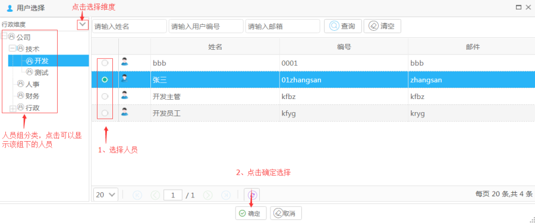
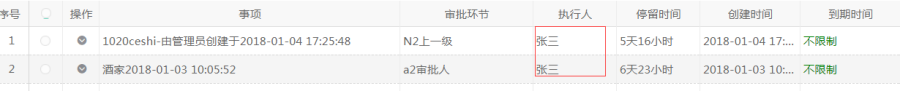
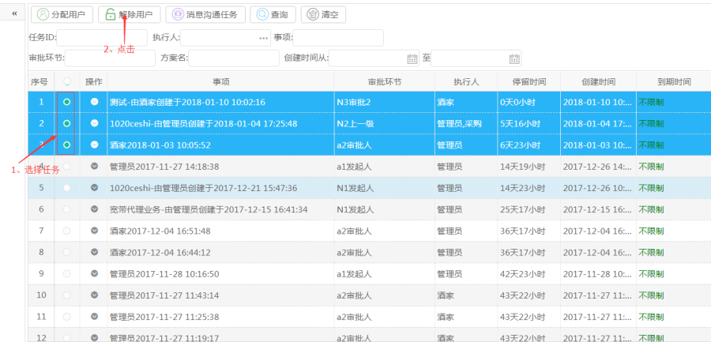
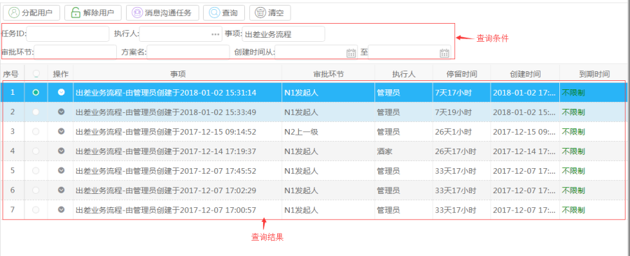
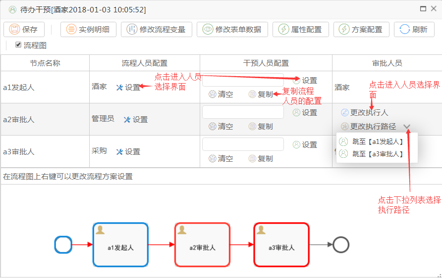
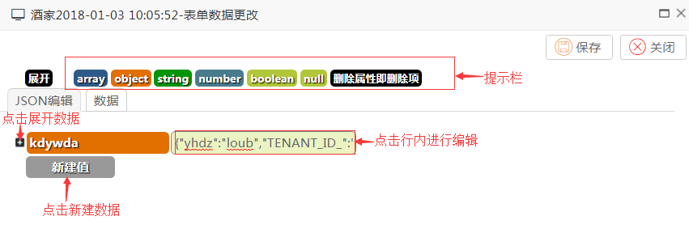

待办任务
功能描述：协同平台根据企业或单位，把所有的正在进行的任务进行统计管理，用来管理审批的任务。
界面展示：

【说明】
流程方案分类：根据业务表单的分类对流程方案进行分类
分配用户：分配任务审批人，可替换掉当前审批人
解除任务：解除任务审批人
消息沟通任务：以发消息的方式与任务相关用户沟通任务
查询：根据查询条件查询任务
清空：清空查询条件及查询结果
干预：具有权限的人员可对任务进行干预操作
办理：办理任务
操作指导：
【分配用户】
操作：选择任务（可多选），点击【分配用户】按钮进入人员选择界面。

人员选择界面：

点击确定人员分配就完成了，界面执行人显示为，分配的人员。

【解除用户】
操作：选择任务，点击【解除用户】按钮，操作完成后，执行人变为任务发起人。

【消息沟通任务】
操作：选择收信人员或者收信组，填写沟通内容，点击发送。

【查询】
操作：按需求填写查询条件，点击【查询】按钮，查询结果在列表显示。

【干预】
操作：有权限的人可以对任务进行干预操作。点击 进入干预操作界面。

【说明】
保存：保存操作
实例明细：可以查看实例信息
修改流程变量：可以根据需求对流程变量进行添加、编辑、删除操作
修改表单数据：可以根据需求对流程的表单数据进行添加、编辑、删除操作
属性配置：流程属性配置
方案配置：流程方案配置
注：属性配置操作请参照【业务流程方案】的节点配置模块。文档路径：流程管理->业务流程方案->节点配置。
方案配置操作请参照【业务流程方案】。文档路径：流程管理->业务流程方案。
【修改流程变量】
操作：点击菜单按钮进入修改流程变量界面。

【修改表单数据】
操作：点击菜单按钮进入修改表单数据界面。
